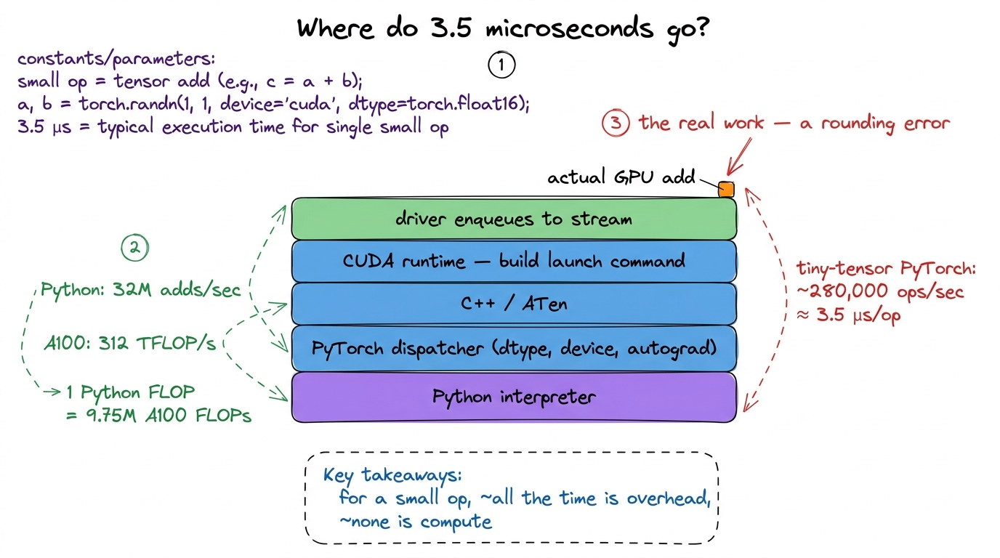
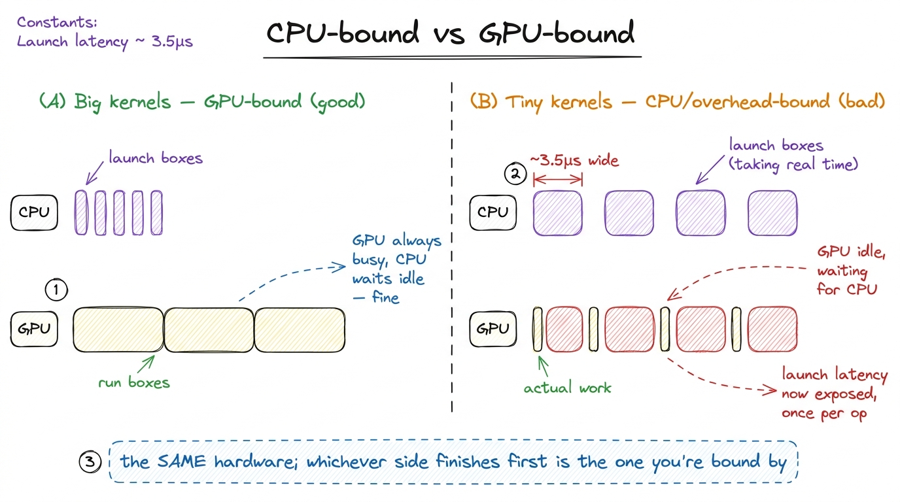
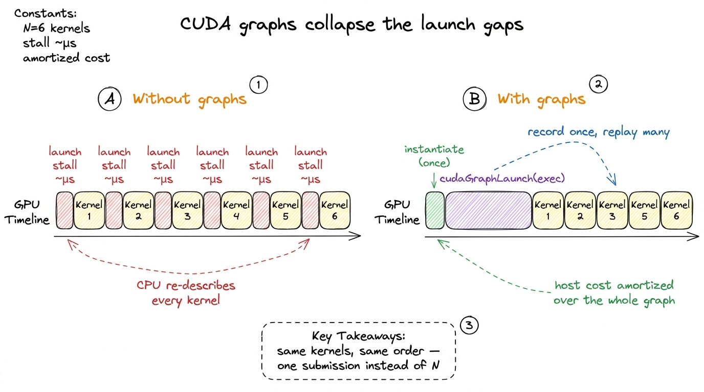
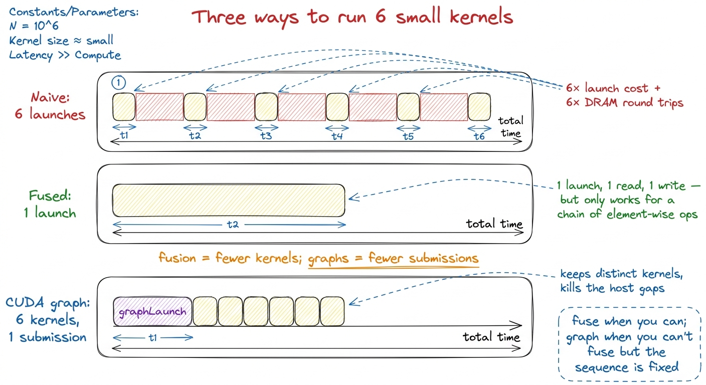
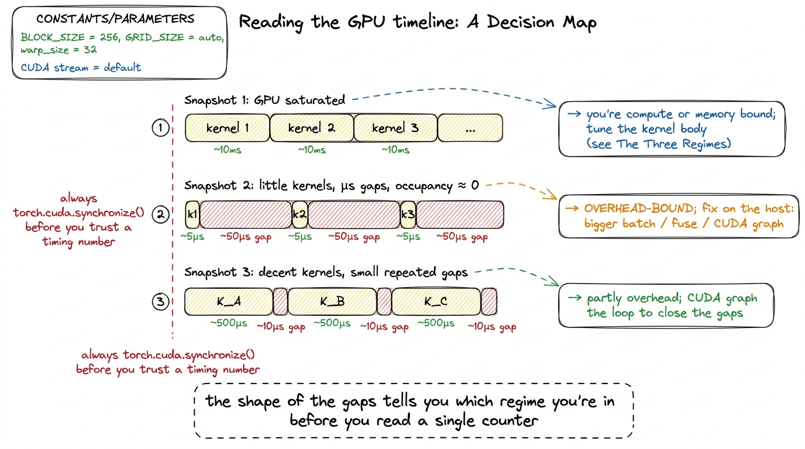

Anatomy of a kernel launch
Every kernel you will ever write goes through the same front door: three angle brackets. You type my_kernel<<<grid, block>>>(args), the line returns almost instantly, and somewhere on the other side of the PCIe bus a few thousand threads spring to life. That syntax is so compact it is easy to treat it as free — as if the launch were just a function call that happens to run on different silicon.
It is not. And the gap between "type three angle brackets" and "instructions actually execute on the GPU" is the whole subject of this article. Before we can even open that gap, though, let me establish the one idea everything else hangs on — because if you are new to GPUs, the rest will not land without it.
First, what is a kernel, and why is launching one special?
A CPU function runs on the same chip your program is already running on. You call it, it runs, it returns. Nothing crosses a physical boundary.
A kernel is different. It is a piece of code you wrote for the CPU to send to the GPU — "the unit of CUDA code that programmers typically write and compose, akin to a procedure or function in languages targeting CPUs." The catch is that the GPU is a separate chip, sitting at the other end of a cable (the PCIe or NVLink bus), running its own schedule. Your CPU cannot reach across and directly poke the GPU's execution units. It can only leave a message: here is some code, here is how many copies of it to run, here are the pointers to the data — run this when you get to it.
So a kernel launch is not a function call. It is closer to mailing a work order to a factory across town. Hold onto that image — the CPU as an office writing work orders, the GPU as a factory on the other side of the bus filling them. This is the factory-and-warehouse picture Horace He uses in "Making Deep Learning Go Brrrr," and it is the mental model we will reuse for the entire article.
 figure rendering · The core mental model. The CPU mails work orders across the bus; the G
figure rendering · The core mental model. The CPU mails work orders across the bus; the GHere is the question this article answers: if writing and mailing that work order takes a fixed few microseconds no matter how big the job is, when does that cost start to hurt — and how do we make it disappear?
That fixed cost is the villain of the story. Let me show you where it comes from.
What the triple angle brackets actually mean
The launch syntax carries four things, three of which most people never touch:
my_kernel<<<gridDim, blockDim, sharedMemBytes, stream>>>(args...);gridDim and blockDim are the ones you always specify. They are dim3 values — up to three-dimensional — that describe the thread hierarchy. blockDim says how many threads live in one thread block (the group that is guaranteed to run together on a single Streaming Multiprocessor (SM) and can share memory and synchronize); gridDim says how many of those blocks make up the grid, the full launch. When the kernel is launched, all its threads are "organized into a thread block grid — the highest level of CUDA's thread hierarchy."
Inside the kernel, every thread reconstructs its own identity from blockIdx, blockDim, and threadIdx — exactly the blockIdx.y * blockDim.y + threadIdx.y arithmetic you saw in the naive GEMM kernel. That is the whole trick of GPU programming: you write the code once, and thousands of copies run it, each computing a different index from its own coordinates.
Let me make the two knobs concrete with a tiny by-hand example, because the numbers matter later. Say you want to add two vectors of length 1,000,000. You pick blockDim = 256 threads per block. How many blocks do you need? You need enough blocks to cover a million elements: ceil(1,000,000 / 256) = 3907 blocks. So gridDim = 3907, blockDim = 256, and the launch spawns 3907 × 256 = 1,000,192 threads — a few more than you need, so your kernel guards with if (idx < N). That single launch, one work order, describes over a million threads. The GPU pulls it apart and schedules the pieces itself.
The constraints are hardware-dictated. A block can hold at most 1024 threads, because a block must fit on one SM and the scheduler tracks blocks in 32-thread warps — 1024 threads is exactly 32 warps.1 The 1024 limit is per-block, not per-SM. An SM on H100 can hold up to 64 warps (2048 threads) resident at once, so a full SM typically holds two or more blocks, which is why block size and occupancy are separate tuning knobs — see the thread hierarchy. The grid, by contrast, can be enormous — billions of blocks — and the driver hands them out to the ~132 SMs on an H100 as SMs free up. You do not control which block lands on which SM, or in what order; the model only promises that every block eventually runs. The piece of hardware that does this handing-out is the GigaThread engine, and it assigns blocks to SMs "as hardware resources become available."
 figure rendering · The four arguments of a kernel launch. Only the first two are usually
figure rendering · The four arguments of a kernel launch. Only the first two are usually Notice the split already forming: two arguments you set on purpose, two that quietly run on defaults. The two defaults are where the interesting behavior lives, so let me take them one at a time.
The third argument: dynamic shared memory
The third slot, sharedMemBytes, is how you request dynamic shared memory — shared memory whose size is not known at compile time.
First, what is shared memory? It is a small, fast scratchpad on the SM itself, shared by all threads in a block. In the factory analogy it is the workbench right next to the machines — far faster to reach than the warehouse (global memory / DRAM), but tiny. Fast kernels live or die on how well they stage data through this scratchpad, which is why the launch even bothers to expose its size.
When you write __shared__ float tile[64][64] inside a kernel, that is static shared memory and its size is baked in at compile time. But often the tile size is a runtime tuning parameter, and you cannot size a static array by a variable. So you declare an unsized extern __shared__ array in the kernel and pass the byte count through the launch:
extern __shared__ float smem[]; // size decided at launch time
my_kernel<<<grid, block, tileM * tileN * sizeof(float), stream>>>(...);Why does this matter more on Hopper than it used to? Because the numbers got big. The SMEM+L1 pool is 256 KiB per SM and up to 228 KiB of it can be carved out as shared memory2 Those 228 KiB are not a hard architectural constant — the exact opt-in maximum depends on the driver reserving a sliver of the 256 KiB pool for L1 and system use. You must also explicitly raise the per-kernel limit with cudaFuncSetAttribute(..., cudaFuncAttributeMaxDynamicSharedMemorySize, ...) before the runtime will grant you more than 48 KiB. — but only if you ask for it. Statically declared arrays are capped low; the big allocations that make fast GEMM kernels possible go through this third launch argument. Leave it at its default of 0 and every extern __shared__ access reads garbage — a bug that shows up as silent wrong numbers, not a crash, which is why it is worth flagging.
That is the third argument. It shapes what runs. The fourth argument shapes when — and it is the one that turns the launch from a function call into a mailed work order.
The fourth argument: streams and how the driver queues the launch
The fourth slot is the stream. A stream is an ordered queue of GPU work: operations on the same stream execute in issue order, operations on different streams may overlap. Leave it blank and you get the default stream, which is exactly what makes the launch feel synchronous even though it is not.
Here is the part that surprises people, and it is worth stopping on. my_kernel<<<...>>>(...) does not wait for the kernel to finish, and does not even wait for it to start. The call is asynchronous. The host line returns almost immediately, long before the GPU has done anything.
Why would it be built this way? Think back to the office and the factory. If the office worker had to walk the work order across town, hand it to a machine, watch the machine finish, and walk back before writing the next order, the office would spend its entire day standing in the factory. That is insane. Instead the office drops the order in an outbox and immediately starts writing the next one. That outbox is the stream.
So what actually happens on that host line is roughly:
- The CUDA runtime validates the launch configuration and packages the grid/block dims, the shared-memory request, and the argument buffer into a launch command.
- It pushes that command into the stream's queue in driver-managed pinned memory — a ring buffer the GPU is reading from.
- It returns to your CPU thread. Your code keeps running.
The GPU's front-end pulls commands off that queue on its own schedule, and only then does the GigaThread engine start assigning blocks to SMs. This is the crucial decoupling: the CPU's job is to keep the queue full; the GPU's job is to drain it. As long as those two rates stay matched — as long as the CPU stays ahead — the microseconds of host-side launch work happen in parallel with GPU compute and cost you nothing. While the GPU chews on kernel N, the CPU is already packaging and queuing kernels N+1, N+2, N+3.
He puts it exactly this way: "as long as PyTorch can 'run ahead' of the CUDA kernels, most of the framework overhead gets completely hidden." That single sentence is why a language as slow as Python can drive a machine as fast as an H100 at all.3 This is also why torch.cuda.synchronize() before timing is non-negotiable. If you time a kernel without synchronizing, you are timing how long it took the CPU to queue the work, not how long the GPU took to do it — often off by orders of magnitude. The async design that hides overhead also hides the truth from a naive stopwatch.
 figure rendering · Under async launch, host queuing overlaps device compute. The launch c
figure rendering · Under async launch, host queuing overlaps device compute. The launch cRead that takeaway box again, because it names the exact failure mode. The overlap is only free while it overlaps. What happens when it stops?
Why is the CPU so slow at this? A napkin calculation
Before we get to the failure mode, let me answer the question a skeptic is already asking: a few microseconds to queue one kernel? That sounds absurd for a modern CPU. What is it even doing?
The honest answer is: a lot of software, layered deep. In a framework like PyTorch, a single a + b on tensors does not go straight to a launch command. It goes through Python's interpreter, then PyTorch's dispatcher (which figures out dtype, device, autograd, whether to record for backward), then into C++, then into the CUDA runtime, then finally into the driver that builds the actual command. Every layer costs a little.
Put a number on it. Horace He measured that pure Python can do only about 32 million additions per second. An A100 does 312 trillion FLOP/s. So "in the time that Python can perform a single FLOP, an A100 could have chewed through 9.75 million FLOPs." The office worker writes in longhand; the factory stamps out parts by the million.
Now stack the whole framework on top and benchmark tiny tensors end to end: PyTorch tops out around 280,000 operations per second — call it ~3.5 µs per op — the vast majority of which is dispatch and launch, not arithmetic. On the GPU side, an H100 at 989 TFLOP/s could execute on the order of a few billion FLOPs in the time one launch takes to leave the CPU.4 This is why "make the batch bigger" is the first thing anyone tells you when your GPU utilization is low. A bigger tensor does not lower the fixed ~3.5 µs launch cost, it just amortizes it over more useful work, dragging the effective overhead-per-flop toward zero.

figure rendering · Profiling one small addition: the arithmetic is a sliver on top of a tThat flamegraph tower is the whole reason the fixed cost exists. It is not the GPU being slow. It is the long software staircase the CPU climbs to describe the work. And that staircase is a fixed height whether the tensor has ten elements or ten million.
When the gap bites: overhead-bound kernels
Now we can name the failure mode precisely. The async overlap has one way to break, and it is the whole reason overhead is one of the three regimes.
If your kernel is tiny — an element-wise x + 1 on a small tensor — the GPU finishes it in less time than the CPU needs to prepare and queue the next launch. The factory fills the order and stands idle, waiting for the next envelope that the office is still writing. Now the pipeline stalls: the GPU sits idle, and you are paying the full few-microsecond launch latency per operation with nothing to hide it behind.
Let me draw the two cases side by side, because this is the single most important picture in the article.

figure rendering · The two regimes drawn as timelines. Big kernels keep the GPU saturatedStare at panel (B). No amount of clever indexing inside the kernel changes anything there — the yellow slivers are already as short as they can be. You are not memory-bound or compute-bound, you are launch-bound (equivalently, CPU-bound or overhead-bound), and the fix lives entirely on the host side.
The classic tell in a profiler is a timeline full of little kernels separated by gaps, each gap roughly the launch latency wide, GPU occupancy near zero between them. When you see that, you stop optimizing the kernel body. The kernel body is not the problem — the launches around it are.
This is not a toy concern. It is the dominant cost in real production inference. LLM decode generates one token at a time, and each token fires a long sequence of small kernels (the attention pieces, the MLP pieces, the norms). At batch size 1 those kernels are small, and there are hundreds of them per token, and they must run in millisecond-scale budgets — the exact scenario where "each kernel launch takes approximately microseconds ... commonly the case for low-latency LLM inference." Left alone, a decode step can spend more time queuing kernels than computing them.
Fix #1: launch fewer times (fusion)
The first, cheapest move is the most obvious once you see the picture: launch fewer times.
If you have twenty small element-wise kernels in a row — add a bias, then scale, then apply GELU, then dropout — each one reads its input from DRAM, does a trivial amount of arithmetic, and writes the result back to DRAM, and each one pays its own launch. Kernel fusion collapses them into a single kernel that reads once, does all twenty operations while the data sits in registers, and writes once. You pay one launch instead of twenty, and as a bonus you also save nineteen round trips to the warehouse.5 Fusion attacks two of the three regimes at once. It removes launch overhead (one launch, not twenty) and memory-bandwidth cost (one DRAM read/write, not twenty). For a chain of memory-bound element-wise ops, this is usually a bigger win from the saved bandwidth than from the saved launches — the two effects compound.
This is precisely what torch.compile and its predecessors (nvFuser, and hand-written fused kernels in libraries) do for you: they trace the chain of element-wise ops and generate one fused kernel. You do not write it by hand anymore, but knowing why it helps is what lets you read a profile and predict whether fusion will move the needle.
Fusion has a ceiling, though. Sometimes you genuinely have hundreds of distinct kernels that cannot be fused into one — a matmul, then an attention op, then a norm, then another matmul — because they are structurally different operations, not a chain of element-wise maps. You still pay one launch per kernel, and in a tight decode loop those launches add up. For that, Hopper-era CUDA gives you a sharper tool.
Fix #2: batch the launches with CUDA graphs
The idea behind CUDA graphs is to stop paying the host-side cost of each launch by recording the whole sequence once and replaying it as a single unit. Where fusion says "do fewer kernels," graphs say "keep all your kernels, but stop re-describing them to the driver every single time."
Recall what the CPU actually does on each launch: it climbs that whole flamegraph staircase — validate config, package dims, build the command, enqueue. A CUDA graph lets you do that climb once, capture the resulting shape of the work, and then submit the entire pre-built topology to the device with a single call. A CUDA graph is "a graph of kernel launches and other work that can be submitted by the host to the device all at once."
The API has three phases:
cudaGraph_t graph;
cudaGraphExec_t exec;
// 1. Capture: record every launch issued on `stream` into a graph.
cudaStreamBeginCapture(stream, cudaStreamCaptureModeGlobal);
for (int i = 0; i < num_layers; ++i)
layer_kernel<<<grid, block, 0, stream>>>(...); // recorded, not run
cudaStreamEndCapture(stream, &graph);
// 2. Instantiate once (this is the expensive part — do it a single time).
cudaGraphInstantiate(&exec, graph, 0);
// 3. Replay: the whole sequence submitted to the device in ONE call.
for (int step = 0; step < many_steps; ++step)
cudaGraphLaunch(exec, stream);Walk through what each phase costs. During capture, cudaStreamBeginCapture puts the stream into a mode where the launches are recorded rather than executed — every kernel invocation, its config, and its dependencies get folded into the graph instead of running. Instantiation does the expensive validation and resource setup once, producing a baked executable. Then cudaGraphLaunch hands the entire pre-baked topology to the driver at once, so the GPU's front-end no longer waits on the CPU to describe each kernel individually.
The per-launch host overhead — the thing that was leaving ~few-µs gaps in your timeline — collapses toward the cost of a single submission. Instead of N trips up the flamegraph staircase, you make one.6 Graphs are not free lunch: the graph is fixed at capture, so anything that changes shape or control flow between iterations breaks it. Static-shape inference loops are the ideal case; that is exactly why LLM decode, with its fixed per-token kernel sequence, is the canonical CUDA-graph workload — and why vLLM and TensorRT-LLM lean on graphs so heavily.

figure rendering · With graphs, the sequence of launches is recorded once and replayed asNow put the two fixes next to each other so the distinction is crisp, because people conflate them constantly.

figure rendering · Fusion and CUDA graphs both attack launch overhead, but differently: fThat orange callout is the sentence to remember: fusion means fewer kernels; graphs mean fewer submissions. Fusion changes what runs on the GPU; graphs change how the CPU describes it. In a real serving stack like vLLM you use both — fused kernels for the element-wise chains, and a captured CUDA graph wrapping the whole per-token decode sequence so the hundreds of remaining launches cost one submission.
Putting it together: reading a real profile
Let me tie the mechanism back to the thing you will actually do — stare at a profiler timeline and decide what to fix. The decision procedure falls straight out of everything above.
You open Nsight Systems on a slow model and look at the GPU row. There are three shapes you might see, and each points at a different lever.

figure rendering · A field guide to GPU timelines. The gap pattern between kernels tellsThe through-line of this whole site is predict the regime, then measure it. Launch anatomy adds one item to that checklist, and it goes first: before you tune a kernel's insides, ask whether the launch itself is the wall. If the operation is small and you see a timeline of tiny kernels with microsecond gaps between them, the kernel body is innocent — you are overhead-bound, and the levers are all on the host: bigger batches, fused kernels, CUDA graphs. Only once the launch cost is amortized to nothing do the questions from the three regimes — am I memory-bound or compute-bound? — even become worth asking.
Here is the honest caveat to end on. None of these host-side fixes make an individual launch cheaper. The ~3.5 µs is still ~3.5 µs. What they do is change how many times you pay it and whether it overlaps GPU work. Fusion pays it fewer times; batching your data pays it over more useful flops; CUDA graphs pay the description cost once and reuse it. The launch cost never goes to zero — you just arrange for the GPU to always have something bigger to do while you pay it.
We now understand what happens when we pull the trigger: the work order, the async queue, the few microseconds of description cost, and the two regimes it creates. Next we go inside the grid the launch created and look at how those blocks map onto SMs and warps — the thread hierarchy that decides whether all those threads we just spawned actually stay busy once the GigaThread engine sets them running.